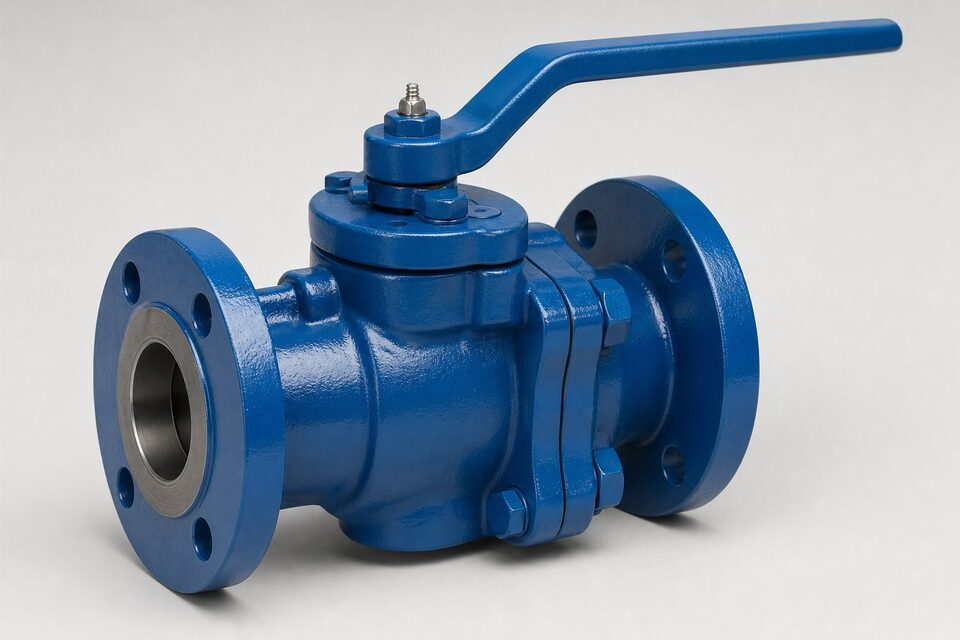

ساختار و اصل کار
در شیر پلاگ، قطعه اصلی یک استوانه مخروطی یا استوانهای است که درون بدنه حول محور خود میچرخد. حفرهای که از میان این استوانه عبور میکند، در وضعیت باز در راستای خط قرار گرفته و جریان را عبور میدهد؛ با چرخش نود درجه، سطح بسته پلاگ مسیر را میبندد. این مکانیزم ساده، عملکرد سریع یکچهارم دور و مسیر عبور مستقیم را فراهم میکند. چون پلاگ با سطح بزرگی روی بدنه مینشیند، آببندی خوبی ایجاد میشود اما گشتاور عملیات نسبت به بال ولو بالاتر است.

طرح روانکاریشده
در طرح روانکاریشده، کانالهایی در پلاگ وجود دارد که گریس مخصوص از طریق یک نیشل به فضای بین پلاگ و بدنه تزریق میشود. این لایه گریس سه وظیفه دارد: کاهش اصطکاک برای چرخش آسانتر، کمک به آببندی سطوح و جلوگیری از نفوذ سیال به میان سطوح. مزیت بزرگ این طرح، قابلیت احیای آببندی در محل با تزریق مجدد گریس است؛ یعنی اگر آببندی ضعیف شود، به جای تعویض شیر، تزریق انجام میشود. بهای آن، نیاز به برنامه تزریق دورهای و انتخاب گریس سازگار با سیال است.
طرح بدون روانکاری
در طرح بدون روانکاری، آببندی با یک آستین پلیمری یا پوشش بین پلاگ و بدنه انجام میشود و نیازی به تزریق گریس نیست. این طرح برای سرویسهایی که ورود گریس به سیال مجاز نیست یا برنامه نگهداری محدود است انتخاب میشود. محدودیت اصلی، جنس آستین است: دما و سازگاری شیمیایی آن باید با سیال بررسی شود و در صورت آسیب، تعویض آستین لازم است. در بسیاری از کاربردهای عمومی، طرح بدون روانکاری به دلیل سادگی نگهداری، جایگزین طرح روانکاریشده شده است.
مقایسه سریع دو طرح
| معیار | روانکاریشده | بدون روانکاری |
|---|---|---|
| آببندی | با گریس تقویت میشود | با آستین پلیمری |
| نگهداری | تزریق دورهای گریس | کم |
| تعمیر میدانی | با تزریق گریس | تعویض آستین |
| سازگاری با سیال حساس | نیازمند گریس مناسب | مناسبتر |
| دمای کاری | بسته به گریس | بسته به آستین |
انتخاب طرح به برنامه نگهداری و حساسیت سیال بستگی دارد.
کاربردها
- خطوط جمعآوری و انتقال با سیالهای کثیف یا حاوی ذرات ریز.
- سرویسهای ترش و خورنده با انتخاب متریال و پوشش مناسب.
- نقاطی که آببندی دوطرفه و تعمیر میدانی اهمیت دارد.
- تجهیزات سرچاهی و خطوط فرایندی در صنایع نفت و گاز.
- نقاطی که مسیر عبور بدون حفره ماندگار لازم است.
نکات انتخاب و استعلام
در استعلام پلاگ ولو، طرح (روانکاریشده یا بدون روانکاری)، متریال پلاگ و بدنه، نوع انتهای اتصال و کلاس فشاری را مشخص کنید. در سرویسهای خورنده یا ترش، الزامات متریالی ویژه باید در اسناد خرید ذکر شود. گشتاور عملیات نیز اهمیت دارد؛ در سایزهای متوسط و بزرگ ممکن است به گیربکس نیاز باشد و باید از ابتدا در سفارش دیده شود. مدارک تحویل نیز باید شامل گواهی مواد و گزارش تست بدنه و نشیمنگاه باشد.
نگهداری و خرابیهای رایج شیر سماوری
رفتار بلندمدت شیر سماوری به شدت به نگهداری آن وابسته است. در طرحهای روانکاریشده، تزریق منظم گریس مخصوص متناسب سیال و دمای سرویس، شرط اصلی آببندی و نرمی حرکت است؛ حذف یا فراموشی این عملیات، به سایش سطح مخروطی و گیر کردن شیر منجر میشود. گریس نامناسب نیز خود میتواند مشکلساز باشد: گریسی که در سیال حل شود یا با دمای سرویس سازگار نباشد، هم آببندی را از بین میبرد و هم ممکن است محصول را آلوده کند. در طرحهای بدون روانکاری، خرابی اصلی فرسایش غلاف و نشست ذرات جامد بین بدنه و مخروطی است که با سخت شدن تدریجی حرکت خود را نشان میدهد. علائم هشداردهنده عمومی شامل نشتی در وضعیت بسته، نیاز به نیروی زیاد برای چرخش و صدای غیرعادی هنگام عملکرد است. در سرویسهای حاوی ذرات جامد، شستوشوی دورهای خط قبل از عملکرد شیر و بازرسی داخلی در توقفها، عمر تجهیز را به شکل ملموسی افزایش میدهد.
جمعبندی
پلاگ ولو شیری ساده، مقاوم و مناسب سرویسهای سخت است. با انتخاب طرح متناسب برنامه نگهداری (روانکاریشده برای تعمیرپذیری میدانی، بدون روانکاری برای سادگی) و ذکر الزامات متریالی سرویس، این شیر در دشوارترین شرایط نیز عملکرد قابل اتکایی دارد و گزینهای قابل تامل در کنار بال ولو محسوب میشود.
سوالات رایج
ساختار پلاگ ولو چگونه است؟
یک استوانه مخروطی یا استوانهای با حفره عبوری درون بدنه میچرخد؛ در وضعیت باز حفره در مسیر جریان و در وضعیت بسته، سطح بسته آن رو به جریان قرار میگیرد. عملکرد یکچهارم دور است.
تفاوت پلاگ روانکاریشده و بدون روانکاری چیست؟
در طرح روانکاریشده، گریس مخصوص بین پلاگ و بدنه تزریق میشود تا آببندی و حرکت آسان شود؛ در طرح بدون روانکاری، از آستین یا پوشش پلیمری برای آببندی استفاده میشود و نیازی به تزریق نیست.
چرا پلاگ در سرویسهای سخت استفاده میشود؟
مسیر عبور مستقیم، نبود حفره ماندگار و مقاومت بالا در برابر سیالهای کثیف و خورنده، آن را برای سرویسهای دشوار مناسب میکند؛ ضمن اینکه تعمیر میدانی طرح روانکاریشده ممکن است.
پلاگ نسبت به بال ولو چه مزیتی دارد؟
سطوح آببندی بزرگتر و قابلیت تعمیر با تزریق گریس در طرحهای روانکاریشده؛ اما گشتاور عملیات معمولاً بالاتر است و برای سایزهای بزرگ کمتر رایج شده است.
مطالب مرتبط
- راهنمای جامع شیر توپی (بال ولو)
- متریال نشیمنگاه شیرآلات
- راهنمای تست و معیارهای نشتی شیرآلات
- راهنمای گیربکس شیرآلات
با ذکر سایز، کلاس، سرویس و طرح (روانکاریشده یا بدون آن)، پلاگ ولو به همراه مدارک تست عرضه میشود.
مشاهده صفحه محصول ← ثبت RFQ همین محصولتامین این تجهیزات را به پیشرو تجهیز فرتاک بسپارید
شرکت پیشرو تجهیز فرتاک تامینکننده تخصصی تجهیزات صنعتی برای پروژههای نفت، گاز، پتروشیمی، فولاد و نیروگاهی است. برای دریافت پیشنهاد فنی و قیمت، استعلام (RFQ) خود را ثبت کنید تا کارشناسان مهندسی فروش در کوتاهترین زمان پاسخ دهند.
- تامین شیرآلات صنعتیخانواده کامل شیر با گواهی مواد و تست
- تامین تجهیزات صنایع نفت و گازپکیج مواد مطابق وندورلیست